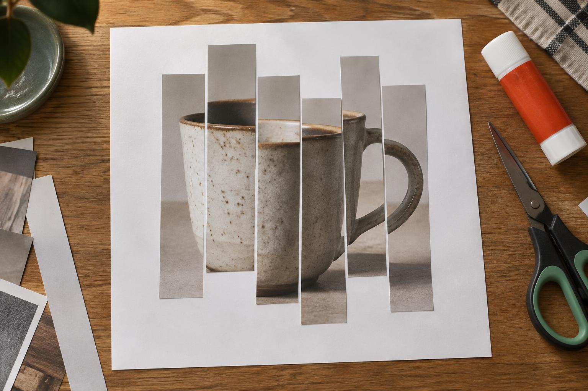
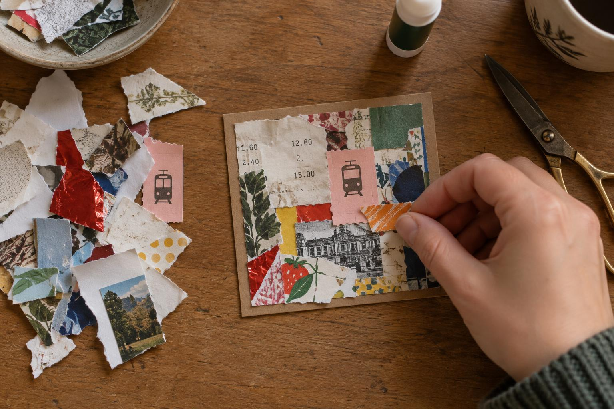
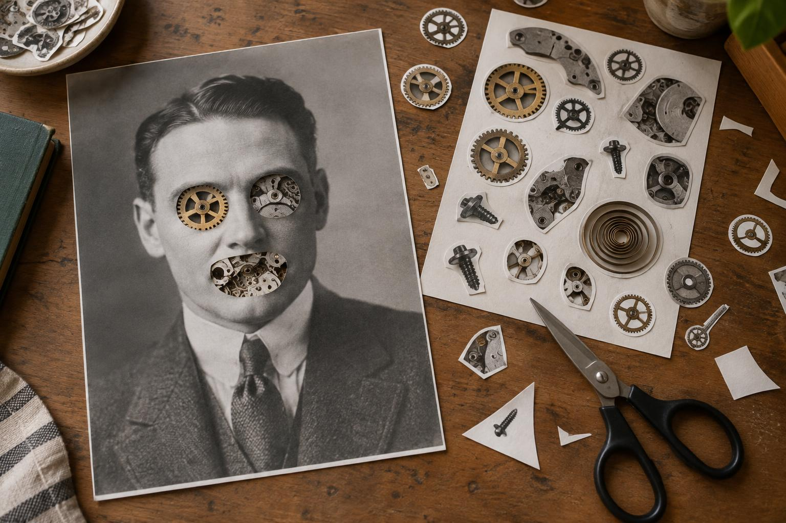
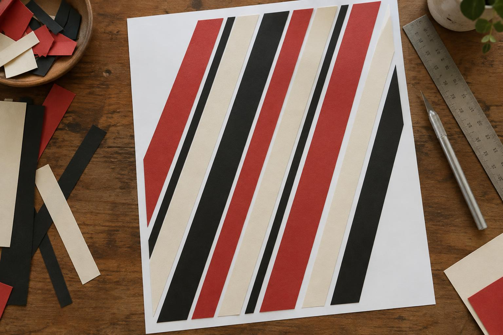
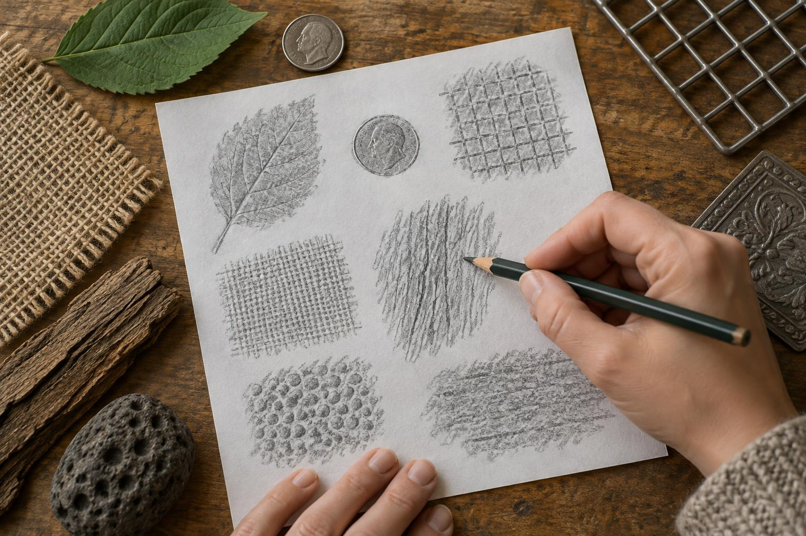
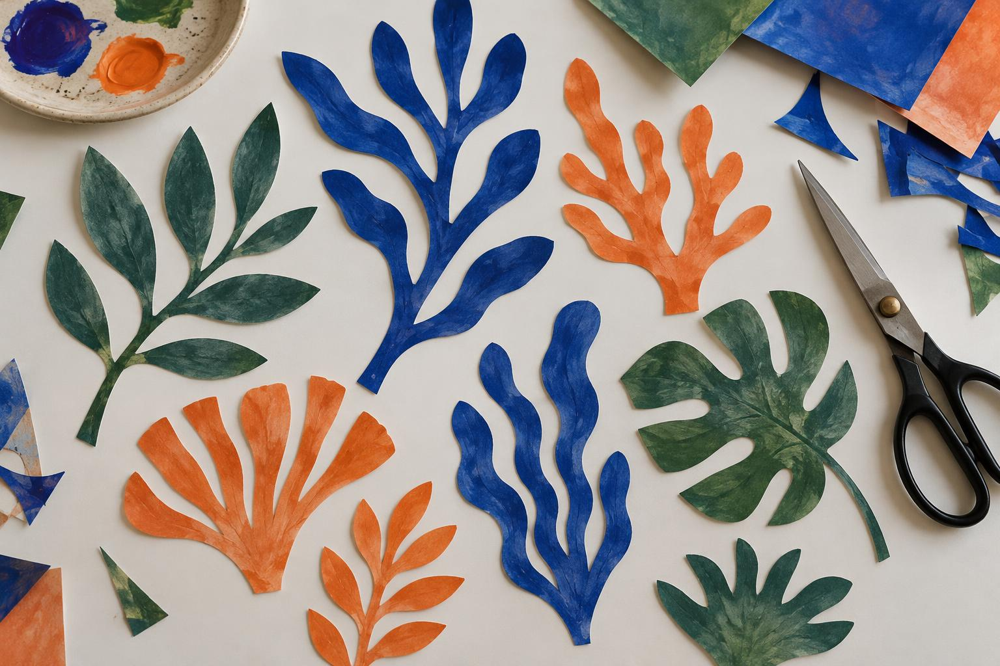
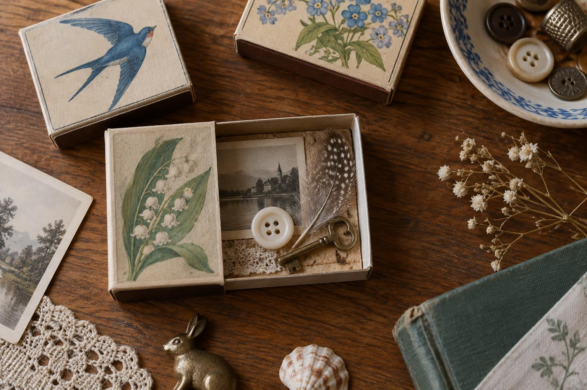
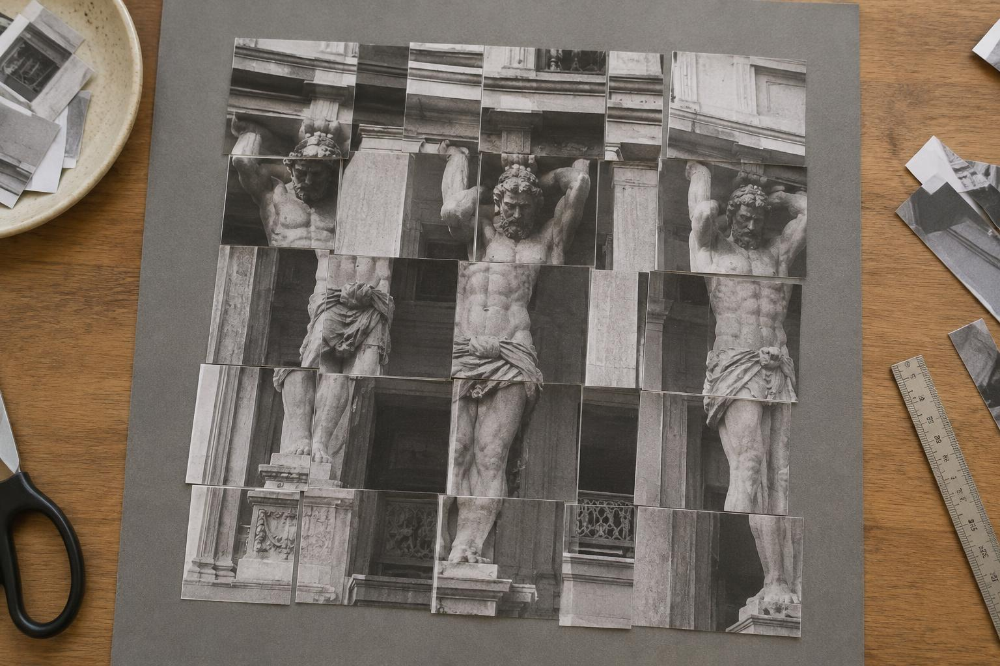

Идея
Соединяем два подхода, которые были у Маши в мастерских, и добавляем свой.
Как идёт встреча
Около полутора часов. Страница занятия открывается на большом экране и ведёт сама: голос Светланы, картинки, таймер, музыка.
Раздаём заготовки
Распечатки, полосы, конверты с материалом. Всё готово заранее, искать ничего не надо.
Разминка руками под лекцию
Режем, рвём, клеим простое механическое задание. Светлана рассказывает о художнике 8–10 минут, на экране его фото и работы, под голосом тихая музыка.
Приём
Что берём у художника: три шага, картинка, как это выглядит в работе.
Основной проект
Одна тема, три уровня: попроще, посложнее, дерзко. Таймер на экране, музыка по кругу, за 15 минут до конца — напоминание.
Показ
Разминки и работы рядом на столе. Пара вопросов на экране, чтобы разговор пошёл.
Восемь встреч
Каждый художник даёт приём, каждая разминка готовит к нему руки. Разминки — меньше поиска, больше делания: материал раздаём готовым.

Кружка с нескольких сторон
Фото предмета режем на 6 вертикальных полос и клеим со сдвигом вверх-вниз. Один предмет, увиденный сразу с нескольких точек.
Раздаём: одну распечатку предмета на человека, белый лист.
Приём встречи: наклеенная бумага — газета и обои как форма.

Плитка
Квадрат 10×10 см на картоне заклеиваем обрывками чеков, билетов и обёрток вплотную, без щелей, как мозаику.
Раздаём: общий пакет бумажного «мусора», квадраты картона.
Приём встречи: Merz — коллаж из того, что выбрасывают.

Лицо-механизм
В распечатке портрета вырезаем глаза и рот и вклеиваем на их место шестерёнки и винтики.
Раздаём: портрет и лист с деталями механизмов.
Приём встречи: фотомонтаж «кухонным ножом» — чужие лица и машины.

Только диагональ
Лист режем на 10 полос разной ширины и клеим все под одним углом. Ничего, кроме диагонали.
Раздаём: цветную бумагу трёх цветов, резак, линейку.
Приём встречи: конструктивистский плакат, динамика.

Фроттаж
Кладём тонкую бумагу на фактуры — монету, решётку, лист, мешковину — и натираем мягким карандашом. Фоны пойдут в основную работу.
Раздаём: тонкую бумагу, мягкие карандаши, коробку фактур.
Приём встречи: роман-коллаж — история серией листов.

Рисовать ножницами
Вырезаем 10 листьев и водорослей сразу ножницами, без карандаша и разметки.
Раздаём: бумагу, заранее закрашенную гуашью.
Приём встречи: цвет-силуэт, композиция из вырезок.

Шкатулка в спичечном коробке
Картинка на дно и три мелочи внутрь. Маленький музей одной истории.
Раздаём: спичечные коробки, коробку мелочёвки, мелкие картинки.
Приём встречи: коробка-ассамбляж, предмет как хранитель памяти.

Перемешанные атланты
Фото архитектуры режем квадратами и полосами, перемешиваем и наклеиваем на серое паспарту. Задание из мастерской Ирины.
Раздаём: одну распечатку архитектуры, серый картон.
Приём встречи: мозаика повседневности — свой дом и улица.
Сводка
Чтобы видеть всю программу разом.
| Кто в гостях | Разминка | Приём |
|---|---|---|
| Пикассо и Брак | Кружка полосами со сдвигом | Наклеенная бумага |
| Курт Швиттерс | Плитка из обрывков | Merz из бумажного мусора |
| Ханна Хёх | Лицо-механизм | Фотомонтаж |
| Родченко и Клуцис | Только диагональ | Плакат и динамика |
| Макс Эрнст | Фроттаж | Роман-коллаж |
| Анри Матисс | Рисовать ножницами | Цвет-силуэт |
| Джозеф Корнелл | Шкатулка в коробке | Ассамбляж-память |
| Ромар Бирден | Перемешанные атланты | Мозаика повседневности |
Что нужно клубу
Один раз собрать — и хватит на все встречи.
Постоянное
- Экран или телевизор с колонкой, ноутбук со страницей занятия
- Ножницы на каждого, 2–3 макетных ножа, коврик для резки
- Клей-карандаши и ПВА, кисточки для клея
- Картон 20×20 и А4, серый картон для паспарту
- Коробка журналов, газет, обоев, цветной бумаги
- Общий пакет «мусора»: чеки, билеты, этикетки, обёртки — копим всем офисом
Перед каждой встречей
- Распечатать заготовки разминки по числу людей
- Разложить материал по конвертам
- Открыть страницу занятия, проверить звук
- Положить на видное место пару готовых примеров
Музыка на странице своя, по кругу на час, ничего не стоит при показе. Хотите свою, например русский рок, — на странице есть кнопка «без музыки», включайте плейлист.
Отдельно: серия «Вещи-товарищи»
Машин собственный проект, ради которого она ушла в свободное плавание. Клуб и серия кормят друг друга.
Наши вещи в наших руках должны быть равными, товарищами.Александр Родченко, письмо из Парижа, 1925
Каждой вещи — свой разворот в «фотоальбоме жизни». Швиттерс, Эрнст и Корнелл из программы клуба работают прямо на эту серию: вещь, серия, память.